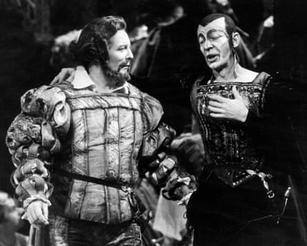

The apparently inauspicious thoroughfare of William Street, in the village of Cilfynydd, near Pontypridd in the south Wales valleys, was the birthplace not only of Lord Merlyn-Rees , the former Labour home secretary, but of two singers of worldwide fame: the bass-baritone Geraint Evans and the tenor Stuart Burrows. Burrows, who has died aged 92, had a mellifluous, highly expressive voice that made him first choice for many opera houses, especially in Mozartian roles, and also with the viewing public. For eight years (1978-86) he had his own hugely popular television show on the BBC, Stuart Burrows Sings, on which he presented Victorian ballads, and folk songs from Wales and elsewhere, as well as classical favourites.
For 22 years, between 1967 and 1989, he supplied Mozartian staples such as Tamino, Titus, Idomeneo and Ottavio at Covent Garden, interspersed with the occasional Fenton in Falstaff, Lensky in Onegin, Ernesto in Don Pasquale and Alfredo in La Traviata. Over the same period he was a regular visitor at the Metropolitan Opera in New York, and was said to be the first UK singer to appear in 12 consecutive seasons.
There he sang Pinkerton opposite Leontyne Price and Alfredo opposite Beverly Sills ’ Violetta, and appeared in Die Entführung aus dem Serail conducted by James Levine, alongside Edda Moser, Kathleen Battle and Martti Talvela. He appeared at the San Francisco Opera first in 1967, as Tamino in Die Zauberflöte – also his first role at the Vienna State Opera in 1970 – and as Don Ottavio at the 1970 Salzburg festival, conducted by Herbert von Karajan .
The son of Albert Burrows, a coalminer, and Gladys (nee Powell), who also worked for a mining company as an administrator, Stuart excelled at rugby as a boy and initially aspired to become a professional player – but he turned down the offer of a contract to play with Leeds Rugby League Club. Instead he took employment as a schoolteacher until he won the tenor solo prize at the Royal National Eisteddfod in 1959 – despite only having voice training as a child until the age of 12 – and went on to study at Trinity College, Carmarthen.
He made his stage debut in 1963 with the Welsh National Opera in the comprimario role of Ismaele in Nabucco, also at that time essaying heavier roles such as Rodolfo in La Bohème and the Duke of Mantua in Rigoletto, which were not to feature in his repertoire as his career developed.
In 1965 he was invited to sing the title role in Oedipus Rex in Athens under the baton of Igor Stravinsky himself. His long run at Covent Garden began with the role of the First Prisoner in Fidelio (1967). The following year he was kept busy there: in January he sang Tamino, in April Jack in The Midsummer Marriage, in May Fenton in Falstaff, in October Tamino again and in November Edmondo in Manon Lescaut. In roles such as Tamino, Titus and Idomeneo, he displayed an ideal combination of an appealingly honeyed tone, aristocratic command and heroic address.
He deployed a similar mode of delivery in Bach and Handel (the latter’s oratorios were particular favourites) and his performances of this repertory were winning even if they showed little affinity with the historically informed style by then gaining momentum.
Stuart Burrows, left, as Faust at the Royal Opera House, London, in 1974.Photograph: Peter Johns/The Guardian
It stood him in good stead, however, in bel canto opera, as heard, for example, in a privately recorded Covent Garden performance as Elvino in La Sonnambula with Renata Scotto , or on a commercial recording of him singing Leicester in Donizetti’s Maria Stuarda, with Sills and Eileen Farrell as the rival queens. Here his aptitude for a natural legato fuses with a plaintive quality of timbre, under immaculate control, to produce a stylish and highly affecting account of the role that makes one wish he had devoted more time to the repertory. A second (privately recorded) taping of Burrows in that role, at San Francisco in 1971, also exists, with Joan Sutherland and Huguette Tourangeau as the two queens.
He excelled, too, in lyric tenor roles of French operas. His recordings included The Damnation of Faust with Seiji Ozawa , Mahler’s Das Klagende Lied with Pierre Boulez and The Midsummer Marriage with Colin Davis . On the concert platform he appeared with conductors such as Zubin Mehta, Georg Solti , Daniel Barenboim and Eugene Ormandy. He also gave solo recitals (often with the pianist John Constable), specialising in songs by Beethoven, Schubert and English composers, as well as ballads and folk songs.
In later years Burrows acted as an adjudicator at prestigious song competitions, including Cardiff Singer of the World. He was awarded an honorary doctorate from the University of Wales, Cardiff, and honorary fellowships from Aberystwyth and Cardiff universities, and Trinity College, Carmarthen. He was particularly proud to have a LeShuttle locomotive named after him.
He married Enid Lewis in 1957. She died in 1985; he is survived by their two children, Mark and Meryl, and two grandchildren.